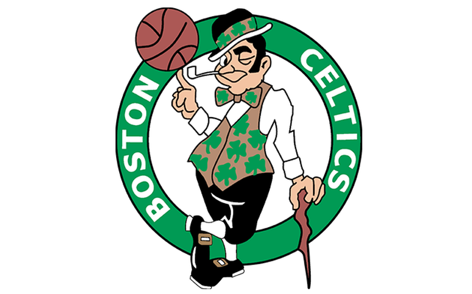

O início – New York Celtics
Foi em 1912, no ginásio Hudson Guild Settlement House, que McCormack reuniu um grupo de colegas e criou um time chamado Celtics. Esse foi o nome escolhido, pois os jogadores eram imigrante irlandeses e pertenciam a um clube na cidade chamado Celtics. Já em 1916, por sugestão de John Witty, o time passou a se chamar New York Celtics. A equipe já era um sucesso e atuava em Nova York, Nova Jersey e Connecticut. No ano de 1917 os EUA entraram para a primeira guerra mundial e o dono da equipe, Frank McCormack, se alistou no exército. Quando retornou havia vencido a guerra, mas tinha perdido seu time.
Original Celtics
Um promoter chamado Jim Furey e seu irmão Tom levaram todos os jogadores do Celtics, inclusive o irmão de MCormack, Jack. Além dos atletas, Jim também manteve o nome da equipe. Frank McCormack processou Furey, que teve de criar um novo nome para o seu time. O escolhido foi Original Celtics, um tanto quanto presunçoso. McCormack venceu o processo, mas não conseguiu recuperar seus jogadores e fundou uma nova equipe, o Macdowell Lyceum. Em 1922 Frank McCormack chegou a enfrentar sua antiga equipe, mas Jim Furey e seu Original Celtics venceram os dois jogos. Depois desses triunfos era hora de Furey mostrar a que veio.
As inovações
Até a década de 1920, os jogadores formavam times amadores para enfrentar outras equipes. Era comum a troca constante de atletas. Eles costumavam atuar antes de outros eventos e cobravam entrada para assistir a partida. Do dinheiro da entrada era subtraído o valor do aluguel, o que sobrava era dividido entre os jogadores da equipe mandante. O time visitante não recebia nada. Para melhorar essa situação, que não dava nenhuma garantia aos atletas, Furey foi o primeiro a pagar salários anuais aos seus jogadores, e todo o lucro dos jogos era dele. Na primeira temporada com contratos exclusivos, em 1923, o Celtics venceu 204 e só perdeu 14 jogos.
Os atletas do Original Celtics jogavam nos domingos e feriados no Madison Square Garden, lugar onde atuaram até 1926. Em seguida foram jogar na Opera House de Nova York. Por conta dos salários fixos o time do Celtics foi o primeiro a viajar pelo país, já que não dependia da renda dos jogos.
Como atuavam sempre juntos e por todo o país, os atletas do Original Celtics conseguiram aprimorar seu jogo com um novo estilo de passe e posicionamento (give and go), a troca de marcação individual e o pivô, invenção de Dutch Dehnert. Os jogadores que chegavam aprendiam o estilo de jogo com os velhos e assim, com muitos passes e belas jogadas, o Celtics foi o time a criar o conceito de barnstorm, equipe de espetáculo, que ainda pode ser visto hoje com o Harlem Globetrotters.
Um time invencível ?
Com os resultados mostrados acima e uma campanha pela liga Leste com 194 vitórias em 205 jogos parecia que o Original Celtics era invencível em playoffs, que podia perdeu um jogo, mas não a série, porém a equipe chegou a ser derrotada algumas vezes.
Na temporada de 1925/26 o Philadelphia SPHAS (South Phila Hebrew Association) venceu o Celtics na final da liga por 2 a 1. Outro time que chegou a fazer frente ao Original Celtics foi o Renaissance Big Five, equipe formada totalmente por negros e com uma campanha de 2.318 vitórias e apenas 381 derrotas em 22 temporadas de existência.
O fim
Em 1926 George Marshall criou a primeira liga nacional de basquete, a ABL (American Basketball League). De inicio o Celtics não quis participar, pois ia bem independentemente, mas quando a ABL vetou que partidas fossem disputadas contra o Original Celtics e os times de Nova York, a equipe teve de ceder.
O Celtics venceu o primeiro título da ABL derrotando o Cleveland Rosenbluns por 3 a 0 na série final. No ano seguinte o Original Celtics teve uma campanha de 40 vitórias e nove derrotas. Os fãs começaram a se afastar, pois o Celtics vencia sempre e eles não queriam ver seus times massacrados. Em 1929 alguns jogadores foram forçados a sair do Celtics para deixar a liga mais competitiva.
Depois da queda da bolsa e a crise de 1929, as pessoas ficaram sem dinheiro para ver aos jogos e os donos também não tinham mais como investir nos times. O Celtics tentou remontar a equipe com os próprios jogadores atuando como promoters e técnico, mas o time não durou muito e acabou chegando ao fim. Em 1959 o Original Celtics foi nomeado como time para o Hall da Fama do basquete.
A equipe chegou a inspirar o nome do nosso querido Boston Celtics. O dono e fundador Walter Brown estava em dúvida de como chamaria sua equipe de basquete, mas então lembrou da grande tradição que o nome Celtics já possuía no esporte e do imenso número de imigrantes irlandeses em Boston. Por isso o nome de CELTICS.